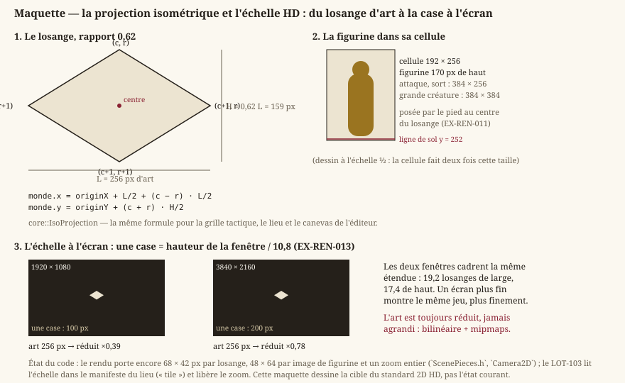
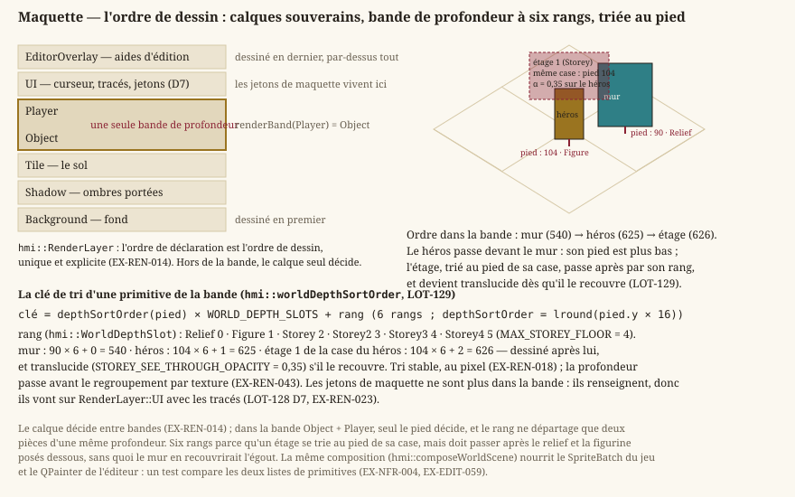

Rendu & cible technique
Statut : livré pour le lieu qu'on parcourt, l'arène et le canevas de l'éditeur : scène composée sur QRhi (Direct3D 11), tri par profondeur, textures chargées depuis des fichiers, texte et traductions par Qt. Dépend de
vision.md.
1. Cible technique
- EX-REN-001 — Le jeu doit fonctionner sous Windows 10/11 (x64).
- EX-REN-002 — Le rendu doit s'appuyer sur Direct3D 11, atteint au travers de QRhi (
EX-REN-050), qui retient ce backend par défaut sous Windows. Direct3D 12 est écarté : surdimensionné pour de la 2D. - EX-REN-003 — La fenêtre du jeu doit être redimensionnable, avec titre et icône ; aucun écran n'en contraint la taille (
EX-IHM-080).
2. Rendu 2D
Tout ce chapitre repose sur une seule convention géométrique : la scène est peinte en isométrie, et le losange de sol a un rapport hauteur/largeur de 0,62. De là découlent l'échelle de l'art, la façon dont une figurine se pose sur sa case, et le facteur d'affichage déduit de la fenêtre.
{kind=link}

Note — Depuis le
LOT-103, le code suit cette maquette : l'échelle de l'art se lit dans le manifeste du lieu ("tile": [256, 159]), la figurine se découpe par sa cellule entière, et le zoom est libre. La maquette duLOT-101, rendue par le moteur, est comparée à la maquette montée à la main partest_hd_mockup_render.cpp.
- EX-REN-010 — Le rendu doit dessiner une carte à partir des pièces de la planche de son lieu (
EX-VIS-008) : une pièce de sol par case, une pièce de relief là où la carte en pose une, la table d'apparence du lieu décidant laquelle. - EX-REN-011 — Le rendu doit dessiner les figurines — héros et PNJ — avec transparence, posées sur leur case par le pied.
- EX-REN-012 — Une figurine doit s'animer par bandes d'images nommées (
idle,walk), dont le découpage est décrit par des données (EX-REN-005). - EX-REN-005 — Les animations doivent être décrites par des données (clip nommé, suite d'images, durée par image, bouclé ou joué une fois) et non codées en dur. Un asset sans description d'animation est affiché comme une image fixe.
- EX-REN-013 — La caméra du lieu doit suivre le héros, bornée à la scène (un axe plus étroit que la vue est centré), à un facteur d'affichage libre — l'agrandissement entier du pixel art n'a plus d'objet (
EX-ARCH-022) — et déduit de la définition de la fenêtre : la largeur d'une case à l'écran vaut la hauteur de la fenêtre divisée par 10,8, soit 100 px à 1080p et 200 px à 2160p. Toutes les définitions cadrent donc la même étendue de monde — 19,2 losanges de large, 17,4 de haut — et un écran plus fin montre le même jeu plus finement, jamais plus de jeu.
Les deux exigences qui suivent décident qui passe devant qui. Elles se complètent : le calque tranche entre familles (le curseur est toujours au-dessus du sol), la profondeur tranche à l'intérieur de la famille où le monde se dessine.
{kind=link}

- EX-REN-014 — Le rendu doit gérer un ordre de dessin par calques, défini par un ordonnancement unique et explicite (
hmi::RenderLayer) dont aucun calque concurrent ne peut s'écarter : sol, objets et figurines, puis interface et aides d'édition. - EX-REN-018 — Dans la scène isométrique, l'ordre de dessin des acteurs et du décor traversé doit venir de leur profondeur, et non de leur calque : une entité passe devant ce qui est plus haut qu'elle à l'écran, derrière ce qui est plus bas. La profondeur se lit au pied du sprite — le bord bas, point de contact avec le sol — et non à son coin haut. Ces calques forment une bande de profondeur commune, à l'intérieur de laquelle le tri par profondeur passe avant le regroupement par texture. Le tri doit rester stable et quantifié au pixel : à profondeur égale, deux sprites gardent un ordre constant d'une image à l'autre. Hors de cette bande, l'ordre des calques reste souverain (
EX-REN-014). Concrétisé enLOT-07. - EX-REN-041 — Le rendu doit charger ses textures depuis des fichiers image (PNG au minimum), décodés en pixels RGBA puis créés en texture GPU. Le filtrage suit la nature de l'asset (
EX-ARCH-022) — refondu auLOT-66: figer le plus proche voisin aurait rendu crénelée toute illustration peinte. - EX-REN-042 — Les assets graphiques doivent être externalisés en fichiers éditables hors code (remplacer le fichier suffit à changer l'apparence), copiés à côté de l'exécutable comme les cartes et les traductions.
- EX-REN-043 — Le rendu doit pouvoir dessiner, en une seule image, des primitives provenant de plusieurs textures distinctes, selon l'ordonnancement de calques unique de
EX-REN-014. - EX-REN-007 — Un asset graphique absent ou illisible n'interrompt jamais le rendu : il est remplacé par un repli visible (damier, ou marqueur généré pour une figurine) et journalisé une fois avec le nom du fichier (
EX-NFR-040).
3. Boucle & temps
- EX-REN-020 — Le jeu doit tourner à 60 images/seconde cible.
- EX-REN-021 — La logique doit être mise à jour à pas de temps fixe (simulation déterministe), le rendu étant découplé.
- EX-REN-022 — La présentation doit être synchronisée pour éviter le tearing : elle appartient au compositeur de Qt (
EX-REN-050).
4. Interface (HMI)
- EX-REN-030 — Le jeu doit afficher un menu principal (nouvelle partie, options, crédits, quitter).
- EX-REN-031 — Le jeu affiche un écran de pause (Échap en exploration), qui suspend réellement la simulation. Détaillé côté interface par
EX-IHM-004. - EX-REN-032 — Le jeu doit afficher son texte avec des polices vectorielles embarquées — un titrage à empattements et un corps de lecture, conformes à la charte (
LOT-66,LOT-87). Le texte est rendu par Qt. - EX-REN-033 — Tout texte affiché doit passer par un catalogue de traduction : le code référence des clés stables, résolues vers une chaîne selon la langue active, chargée depuis un fichier par langue (français par défaut). Aucun libellé d'interface n'est codé en dur, afin de rendre l'ajout d'une langue trivial. Une clé ou un fichier de langue manquant est traité comme une erreur récupérable (repli déterministe), cf.
EX-NFR-040.
5. Audio
- EX-REN-047 — La lecture audio vit entièrement dans
HMI(hmi::AudioEngine, Qt Multimedia) : la simulation reste pure, déterministe et testable sans périphérique audio (EX-NFR-010), et le son n'a aucun effet sur elle (EX-ARCH-012). Qt Multimedia est provisionné selonEX-BUILD-010. - EX-REN-048 — Le volume est réglable depuis les options, prend effet immédiatement et est persisté. L'absence de périphérique audio est une erreur récupérable (
EX-NFR-040) : le jeu reste pleinement jouable en silence.
6. Surface de rendu
- EX-REN-050 — Le rendu doit être présenté dans un élément composé avec l'interface —
QQuickRhiItempour le jeu, uneQGraphicsViewpeinte parQPainterpour l'éditeur depuis leLOT-EDITOR-02— et jamais dans une fenêtre native embarquée : un élément frère d'une fenêtre native ne se dessine pas de façon fiable par-dessus elle.
Exigences retirées
Ancres conservées, jamais renumérotées : les lots livrés s'y réfèrent.
- EX-REN-004 (retirée au
LOT-88) — modèle de présentation DXGI : la présentation appartient à Qt (EX-REN-022). - EX-REN-006 (retirée au
LOT-88) — apparence des mécanismes selon leur état : le jeu n'a pas de mécanismes. - EX-REN-008 (retirée au
LOT-88) — effets de traînée, de poussière et de secousse d'écran. - EX-REN-009 (retirée au
LOT-88) — planche du personnage de plateforme ; les figurines sontEX-REN-011. - EX-REN-015 (retirée au
LOT-88) — caméra par salle. - EX-REN-016 (retirée au
LOT-88) — trois modes de cadrage choisis par le niveau. - EX-REN-017 (retirée au
LOT-88) — taille de zone de caméra par niveau. - EX-REN-040 (retirée au
LOT-88) — bruitages de saut, de mécanisme et de fin de tableau. - EX-REN-044 (retirée au
LOT-88) — image de fond d'un niveau. - EX-REN-045 (retirée au
LOT-88) — ombres portées des tuiles solides. - EX-REN-046 (retirée au
LOT-88) — bascule de rendu Physique/Texture. - EX-REN-049 (retirée au
LOT-88) — composition des plans picturaux.
Traçabilité
Tout ce qui touche fenêtre, rendu, entrées et interface relève de Source/HMI ; la logique de simulation reste dans Source/Core. Contraintes de performance : exigences-non-fonctionnelles.md.